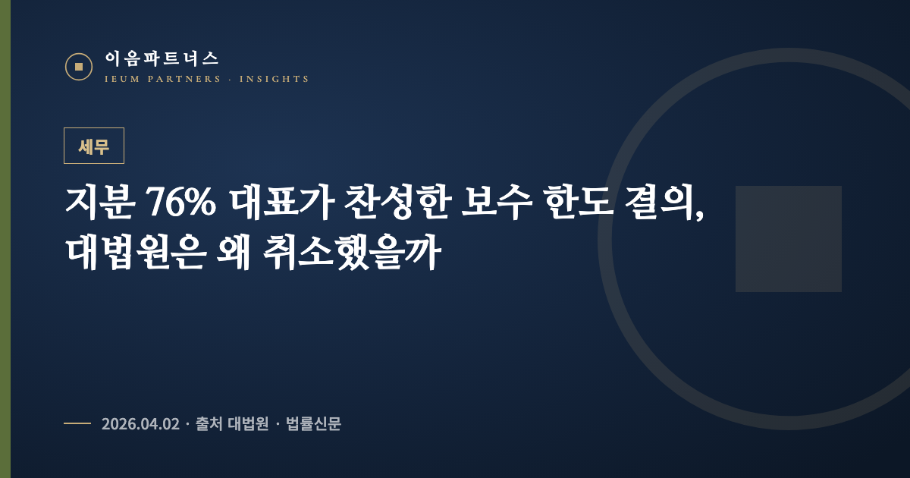

지분 76% 대표가 찬성한 보수 한도 결의, 대법원은 왜 취소했을까

주식 76%를 가진 한 비상장회사 대표이사가 2024년 3월 주주총회에서 이사 보수 한도를 4억 5,000만 원으로 정하는 안건에 자기 주식으로 찬성했다가, 24%를 가진 주주가 낸 소송에서 결의가 취소됐습니다. 대법원은 2026년 4월 2일 회사의 상고를 기각해 이 판단을 확정했습니다. 대표님 회사는 임원 보수 한도를 정할 때 이사를 겸한 주주도 표를 던져 왔습니까? 이 글에서는 판결 내용과 기준, 지금 확인할 점을 정리합니다.
지분이 많더라도 자기 보수와 관련된 안건에서는 의결권이 빠진다는 판단입니다. 가족이나 동업자, 투자자가 주주로 있는 회사라면 그동안의 주주총회 의사록을 한 번 살펴볼 필요가 있습니다. 보수 결의 절차 점검이 필요하시면 카카오톡 채널 이음파트너스로 편하게 물어 주세요.
어떤 사건이었나
| 구분 | 내용 |
|---|---|
| 주주 구성 | 총 1만 주 가운데 대표이사 76%, 소송을 낸 주주 24% |
| 문제 된 결의 | 2024년 3월 주주총회, 이사 보수 한도 4억 5,000만 원 |
| 쟁점 | 이사인 대표가 자기 주식으로 찬성한 것이 상법 제368조 제3항 위반인지 |
| 회사 측 주장 | 개별 이사 보수가 아니라 전체 보수 한도만 정했다 |
| 결과 | 원심(서울고등법원, 2025년 10월 30일) 결의 취소, 대법원 상고 기각(2025다219931) |
소송을 낸 주주는 대표가 찬성한 표결이 상법이 금지한 이해충돌이라고 주장했습니다(법률신문). 회사는 한도만 정했을 뿐이라고 맞섰지만, 1심 재판부는 보수 한도가 앞으로 개별 이사의 보수를 정하는 데 중요한 영향을 미칠 수밖에 없다고 봤습니다.
대법원이 본 기준
① 이사를 겸한 주주는 표를 던질 수 없습니다
상법은 주주총회 안건에 특별한 이해관계가 있는 사람(결과에 개인적 이익이 걸린 사람)은 의결권을 행사하지 못하게 합니다. 대법원은 이사 보수를 정하는 결의에서 “주주인 동시에 이사인 자는 특별한 이해관계 있는 자로서 총회에서 의결권을 행사할 수 없다”고 밝혔습니다(법률신문). 다만 주주 전원이 이사이거나, 이해관계인을 빼면 표를 던질 주주가 아무도 없는 경우처럼 특별한 사정이 있으면 예외가 될 수 있습니다(대법원 판결문).
② 정족수 계산에서도 빠집니다
주주총회 결의는 보통 출석한 주주 의결권의 과반수와 발행주식 총수의 4분의 1 이상 찬성이 필요합니다. 대법원은 이해관계 있는 주주의 주식을 출석 의결권 수뿐 아니라 정족수 계산의 바탕인 발행주식 총수에서도 빼야 한다고 했습니다(대법원 판결문). 법률신문은 대주주 의결권이 빠져 소수주주만 남더라도 정족수 미달이 아니라는 뜻이라고 풀이했습니다.
2025년 4월에도 최대주주이자 이사인 사람이 보수 한도 안건에 찬성한 다른 회사 사건에서, 대법원이 심리불속행(본안 심리 없이 상고를 기각하는 것)으로 원고 승소를 확정한 바 있습니다. 이번 판결은 그 판단 이유까지 밝혔다는 점에서 의미가 있습니다(법률신문).
대표님이 지금 확인할 것
- 최근 주주총회 의사록에서 이사 보수 한도 안건에 이사를 겸한 주주가 표를 던졌는지
- 우리 회사가 주주 전원이 이사인 경우처럼 예외에 해당하는지, 아니면 이사가 아닌 주주가 있는지
- 보수 안건을 올릴 때 의결권이 제한되는 주주를 빼고 출석·찬성 수를 따로 계산해 기록하는지
- 판결문과 기사에는 이미 지급된 보수가 어떻게 되는지까지는 나오지 않으므로, 지난 결의가 걸린다면 변호사·세무사와 함께 확인하시길 권합니다
참고한 자료
- 대법원 2026. 4. 2. 선고 2025다219931 판결(회사에 관한 소송) — 대법원 (2026.04.02)
- 대법 “주주인 기업 대표, 연봉 셀프 인상 안 된다” — 법률신문 (2026.05.02)
주주총회 의사록과 보수 결의 절차를 함께 점검하고 싶으시다면 카카오톡 채널 이음파트너스로 편하게 문의해 주세요.
※ 이 글은 일반적인 정보 제공을 위한 것으로, 개별 사안은 세무사·노무사 등 전문가와 함께 확인하시기 바랍니다.